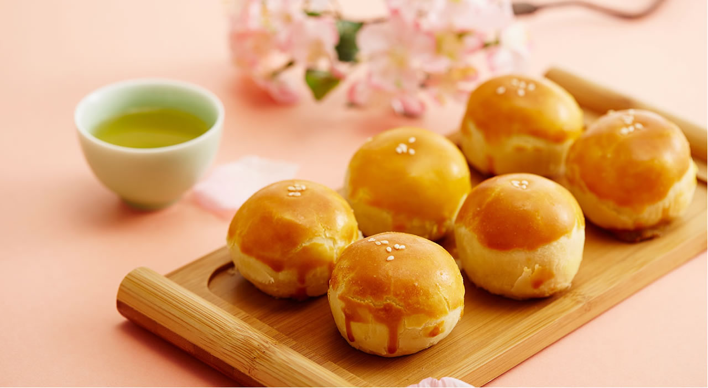

Dim Sum

Egg Yolk Pastry
Egg Yolk Pastry is a traditional oriental snack. In QJD(our restaurant), it be usually served with duck egg yolks.
“The first bite, crispy skin, thin and crunchy aroma, the second bite, delicate bean paste, sweet and rich, long aftertaste, the third bite, savory endless egg yolk, and the sweetness of the bean paste with each other, in the mouth fusion into another height of deliciousness."